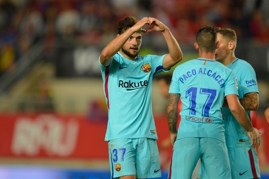

-
Cillessen boekt eenvoudige bekerzege met B-ploeg Barça
Het eerste doelpunt voor de formatie van Ernesto Valverde liet even op zich wachten. Pas één minuut voor rust werd de ban gebroken door een kopbal van Paco Alcácer op aangeven van Gerard Deulofeu. Tegen de Segunda División B-club (derde niveau) kregen verschillende sterkhouders rust. Zo zaten Lionel Messi, Andrés Iniesta en Luis Suárez niet eens bij de selectie. De eerste twee werden maandagavond gekozen in het FIFA Elftal van het Jaar. In het bekertoernooi was er ook eindelijk ruimte voor Jasper Cillessen om wat spelritme op te doen. Zelfs Thomas Vermaelen startte weer eens vanaf het eerste fluitsignaal. Na de pauze liep de B-ploeg van Barcelona uit naar een gemakkelijke overwinning. Delofeu verdubbelde de voorsprong na een Suárez-achtige dribbel. De Spanjaard kreeg de bal in de kluts mee, maar bleef in de afronding ijzig koud: 0-2. Vier minuten later was het de beurt aan de 22-jarige José Arnáiz (foto). De debutant sneed naar binnen en schoot de bal hard, onderin de verre hoek. Ook de negentienjarige Marc Cucurella beleefde zijn vuurdoop in de hoofdmacht van Barça, de linksback staat bekend als een groot talent in Spanje. In de slotfase nam Barcelona wat gas terug en spaarde het de krachten, desondanks lijkt plaatsing voor de achtste finale een formaliteit. De return is over ruim een maand. Zaterdag komt de koploper van La Liga in actie in de competitie tegen Athletic de Bilbao (20.45 uur). Lees meer
-
Martens geniet: 'Daar stond Van Basten, heel bijzonder'
Het duel was al even afgelopen toen Martens nog in de mond van de spelerstunnel stond. Daar waar de fans naar de rand van het veld waren afgezakt, haar naam riepen en over de reling hingen om hun telefoon aan de aanvaller te overhandigen. Martens nam er uitgebreid de tijd voor en zo ging menig fan met een selfie met de sterspeelster in de zakken naar huis.
 Maandag werd de nummer elf van Oranje in Londen verkozen tot Wereldvoetbalster van het Jaar. Uit handen van Marco van Basten ontving ze de beker echter niet in Engeland, maar in Zeist, waar ze zich met Oranje voorbereidde op het duel van vanavond tegen Noorwegen. 'Dat was zondag al', sprak Martens na afloop. 'En het was heel moeilijk om gisteren heel de dag mijn mond te moeten houden. Ik vond het sowieso erg jammer dat ik het gala heb moeten missen. Dit was zo’n speciaal moment in mijn leven en dan is zo’n timing jammer. Maar ik ben hier zo blij mee. Er staat straks een hele mooie beker in mijn woonkamer en uiteindelijk was het ook gewoon goed ingevuld op deze manier. Ik werd in de kleedkamer verrast door mijn teamgenoten en daar stond dus ook Marco van Basten. Een heel bijzonder moment.'
Van Basten werd in 1992 verkozen tot Wereldvoetballer van het Jaar. 25 jaar later heeft Nederland zijn opvolger in Martens. De aanvaller haalde haar schouders op over dat feit. 'Nou, ik ben er eigenlijk best rustig onder. Ik denk dat ik het nog allemaal tot me moet laten doordringen, mede door de timing waarop de uitreiking plaatsvond. Deze wedstrijd was meteen heel belangrijk voor de WK-kwalificatie en daar lag mijn focus.'
Zelf was Martens in het duel met de Noren minder zichtbaar dan anders. 'Het was af en toe lastig', beaamde ze, nu tegenstanders zich meer en meer op haar instellen. 'Als ik aan de bal wilde komen was er vaak ook nog dekking van de rechtshalf. Maar dan komt er ergens anders op het veld meer ruimte en ik denk dat we het vandaag heel goed gedaan hebben. De druk is groter, dat weten we. Maar het is ook echt niet zo dat wij nu even over iedereen heen lopen. Noorwegen is niet zomaar een ploeg en het was een moeilijke wedstrijd. Dat-ie er dan in de laatste minuut zo in valt… Ja, lekker. Lees meer
Maandag werd de nummer elf van Oranje in Londen verkozen tot Wereldvoetbalster van het Jaar. Uit handen van Marco van Basten ontving ze de beker echter niet in Engeland, maar in Zeist, waar ze zich met Oranje voorbereidde op het duel van vanavond tegen Noorwegen. 'Dat was zondag al', sprak Martens na afloop. 'En het was heel moeilijk om gisteren heel de dag mijn mond te moeten houden. Ik vond het sowieso erg jammer dat ik het gala heb moeten missen. Dit was zo’n speciaal moment in mijn leven en dan is zo’n timing jammer. Maar ik ben hier zo blij mee. Er staat straks een hele mooie beker in mijn woonkamer en uiteindelijk was het ook gewoon goed ingevuld op deze manier. Ik werd in de kleedkamer verrast door mijn teamgenoten en daar stond dus ook Marco van Basten. Een heel bijzonder moment.'
Van Basten werd in 1992 verkozen tot Wereldvoetballer van het Jaar. 25 jaar later heeft Nederland zijn opvolger in Martens. De aanvaller haalde haar schouders op over dat feit. 'Nou, ik ben er eigenlijk best rustig onder. Ik denk dat ik het nog allemaal tot me moet laten doordringen, mede door de timing waarop de uitreiking plaatsvond. Deze wedstrijd was meteen heel belangrijk voor de WK-kwalificatie en daar lag mijn focus.'
Zelf was Martens in het duel met de Noren minder zichtbaar dan anders. 'Het was af en toe lastig', beaamde ze, nu tegenstanders zich meer en meer op haar instellen. 'Als ik aan de bal wilde komen was er vaak ook nog dekking van de rechtshalf. Maar dan komt er ergens anders op het veld meer ruimte en ik denk dat we het vandaag heel goed gedaan hebben. De druk is groter, dat weten we. Maar het is ook echt niet zo dat wij nu even over iedereen heen lopen. Noorwegen is niet zomaar een ploeg en het was een moeilijke wedstrijd. Dat-ie er dan in de laatste minuut zo in valt… Ja, lekker. Lees meer -
City voorkomt blamage na strafschoppenserie
Hoewel de thuisploeg dinsdagavond zeker niet aantrad met haar sterkste elf, leek de aanval met Gabriel Jesus en Sergio Agüero een garantie op veel doelpunten. De Argentijn leek na zes minuten op weg naar de openingstreffer, maar zijn schot van buiten de zestien werd gekeerd door doelman Will Norris. Enkele minuten later had hij wederom de 1-0 op zijn schoen, maar hij schoot de bal ver naast na een goede actie van Raheem Sterling.
 Na 25 minuten was het de Engelse flankspeler die een grote kans kreeg, maar ook hij had zijn vizier niet op scherp staan. Vlak voor de theepauze was het Agüero die een halve volley naast het doel zag verdwijnen, waardoor de club uit het Championship verrassend met 0-0 ging rusten.
In de tweede helft kwamen de bezoekers wat meer in het spel, wat zelfs leidde tot een grote kans na ruim een uur spelen. Doelman Claudio Bravo moest zich voor het eerst echt strekken na een poging van Hélder Costa. De Portugese aanvaller hoefde enkel de sluitpost van de Citizens nog te verslaan, maar de Chileen redde prachtig met één hand.
Ook in de slotfase kregen de bezoekers nog een enorme kans om te stunten, maar Bright Enobakhare kwam oog in oog met Bravo niet tot een schot door goed verdedigen van invaller Tosin Adarabioyo. In de laatste minuten golfde het spel nog op en neer, maar tot grote kansen leidde dit niet, waardoor een verlenging het gevolg was.
In de verlenging kreeg City weer het betere van het spel, mede doordat Wolves vermoeid raakte. Een keiharde pegel van Sterling werd in de 100ste minuut briljant geblokt door verdediger Kortney Hause. Ook in de extra speeltijd stonden de bezoekers goed te verdedigen, waardoor City een mogelijke strafschoppenserie met de minuut dichterbij zag komen. Tien minuten voor tijd kreeg invaller Leroy Sané nog een grote kans uit de rebound, maar zijn poging werd over het doel getikt. Ook in de absolute slotfase werd er niet meer gescoord, waardoor strafschoppen de winnaar uit moesten wijzen.
Namens de bezoekers miste Alfred N'Diaye de tweede strafschop, waarna ook ploeggenoot Conor Coady zijn inzet gekeerd zag worden door Bravo. Omdat de strafschoppen volgens de ABBA-methode werden genomen, konden Sané en Agüero het duel vervolgens beslissen (4-1). Lees meer
Na 25 minuten was het de Engelse flankspeler die een grote kans kreeg, maar ook hij had zijn vizier niet op scherp staan. Vlak voor de theepauze was het Agüero die een halve volley naast het doel zag verdwijnen, waardoor de club uit het Championship verrassend met 0-0 ging rusten.
In de tweede helft kwamen de bezoekers wat meer in het spel, wat zelfs leidde tot een grote kans na ruim een uur spelen. Doelman Claudio Bravo moest zich voor het eerst echt strekken na een poging van Hélder Costa. De Portugese aanvaller hoefde enkel de sluitpost van de Citizens nog te verslaan, maar de Chileen redde prachtig met één hand.
Ook in de slotfase kregen de bezoekers nog een enorme kans om te stunten, maar Bright Enobakhare kwam oog in oog met Bravo niet tot een schot door goed verdedigen van invaller Tosin Adarabioyo. In de laatste minuten golfde het spel nog op en neer, maar tot grote kansen leidde dit niet, waardoor een verlenging het gevolg was.
In de verlenging kreeg City weer het betere van het spel, mede doordat Wolves vermoeid raakte. Een keiharde pegel van Sterling werd in de 100ste minuut briljant geblokt door verdediger Kortney Hause. Ook in de extra speeltijd stonden de bezoekers goed te verdedigen, waardoor City een mogelijke strafschoppenserie met de minuut dichterbij zag komen. Tien minuten voor tijd kreeg invaller Leroy Sané nog een grote kans uit de rebound, maar zijn poging werd over het doel getikt. Ook in de absolute slotfase werd er niet meer gescoord, waardoor strafschoppen de winnaar uit moesten wijzen.
Namens de bezoekers miste Alfred N'Diaye de tweede strafschop, waarna ook ploeggenoot Conor Coady zijn inzet gekeerd zag worden door Bravo. Omdat de strafschoppen volgens de ABBA-methode werden genomen, konden Sané en Agüero het duel vervolgens beslissen (4-1). Lees meer
-
Nederlanders blameren zich met Palace, Lingard belangrijk voor United
Crystal Palace is uitgeschakeld in het toernooi om de League Cup. The Eagles, die begonnen met Patrick van Aanholt, Jairo Riedewald en Timothy Fosu-Mensah in de basis, moesten met ruime cijfers het hoofd buigen voor Championship-club Bristol City. De wedstrijd begon nog aardig voor de formatie van Roy Hodgson. Bakary Sako opende namelijk de score op aangeven van Ruben Loftus-Cheek. Uiteindelijk gingen de Londenaren af als een gieter. Door treffers van Matt Taylor, Milan Djuric, Joe Bryan en Callum O'Dowda werd het uiteindelijk liefst 4-1.Manchester United heeft zich geplaatst voor de volgende van het League Cup-toernooi. Tegen Swansea City was Jesse Lingard de grote man. Na twintig minuten schoof de Engelsman beheerst raak na een fraai hakje van Marcus Rashford. Een kwartier na de pauze toonde Lingard ook aan een begaafd kopper te zijn. Na een voorzet van Nemanja Matic knikte de buitenspeler op schitterende wijze raak.Leeds United bracht Leicester City al vroeg aan het wankelen. De Championship-club, waar Vurnon Anita in de basis begon, kwam op voorsprong door een schitterende knal via de onderkant van de lat van Pablo Hernández: 0-1. Nog voor de rust kwamen The Foxes langszij dankzij ex-Manchester City-aanvaller Kelechi Iheanacho. De jonge Nigeriaan knalde van buiten het zestienmetergebied laag in de hoek: 1-1. In de zeventigste minuut kwam de formatie uit Leicester op voorsprong, dit keer was Iheanacho de aangever. Het doelpunt kwam op naam van de Algerijnse spits Islam Slimani. Het slotakkoord was twee minuten voor tijd voor Riyad Mahrez. De buitenspeler dribbelde op zijn befaamde wijze naar binnen en drukte beheerst af in de verre hoek. Lees meer